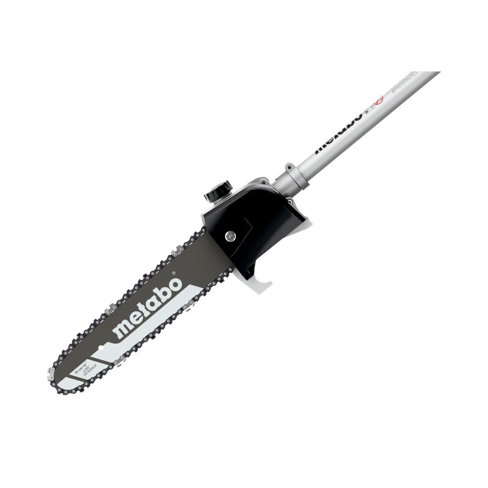
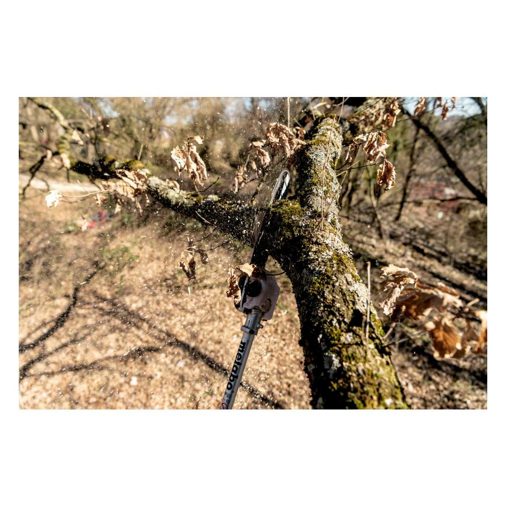
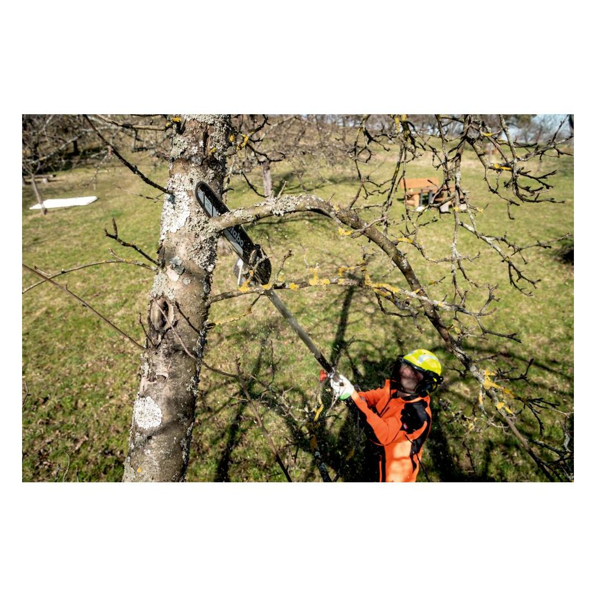
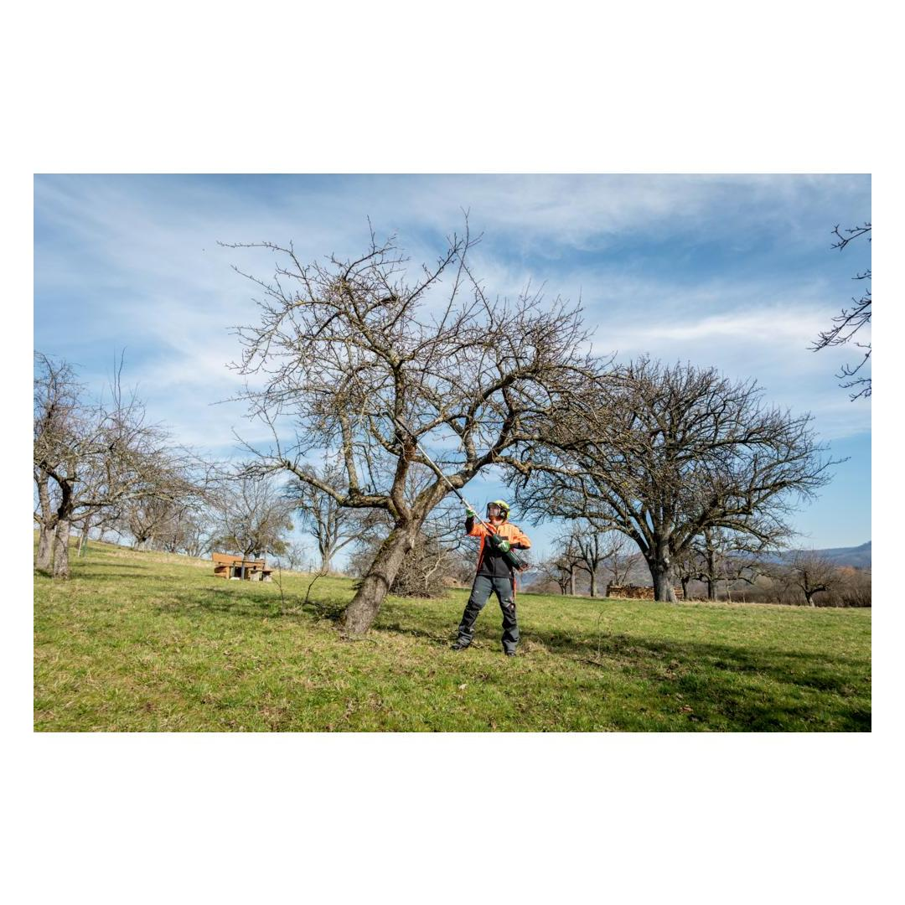
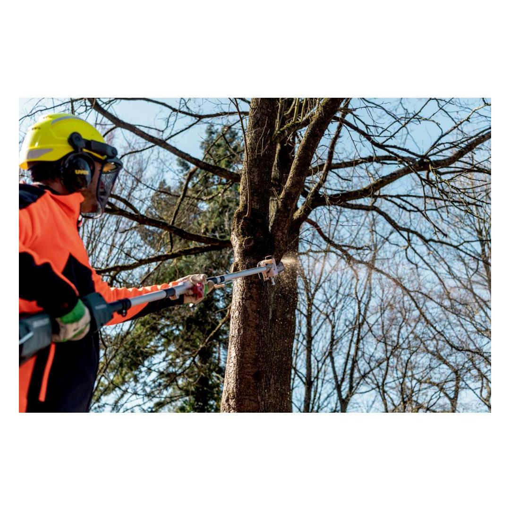
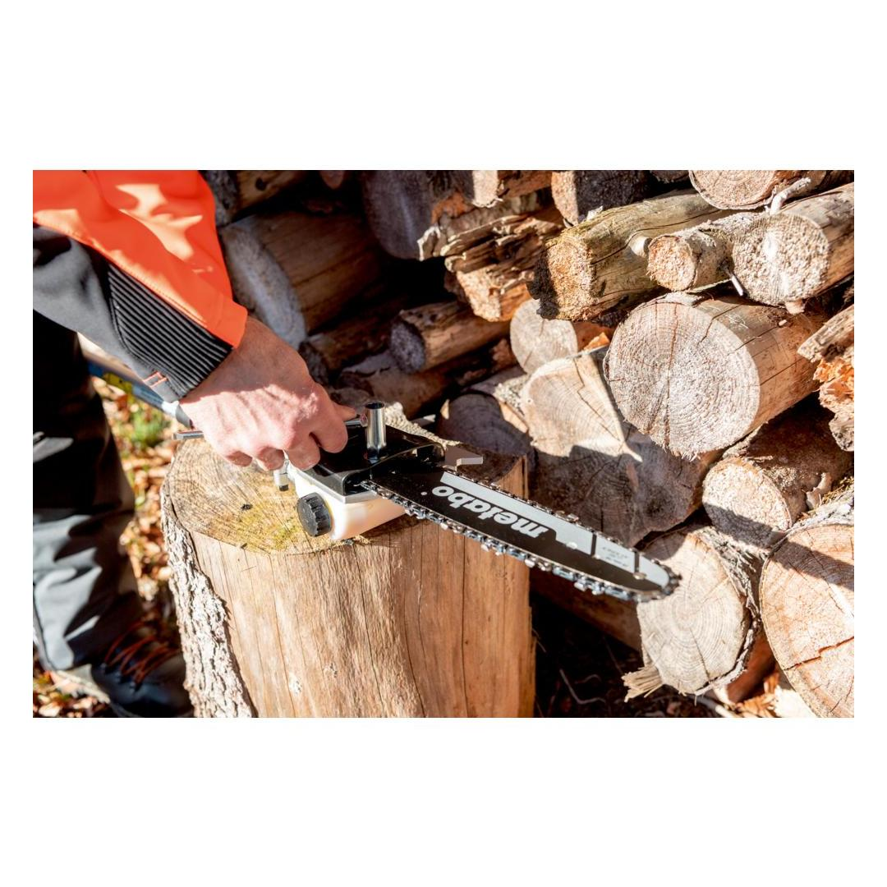
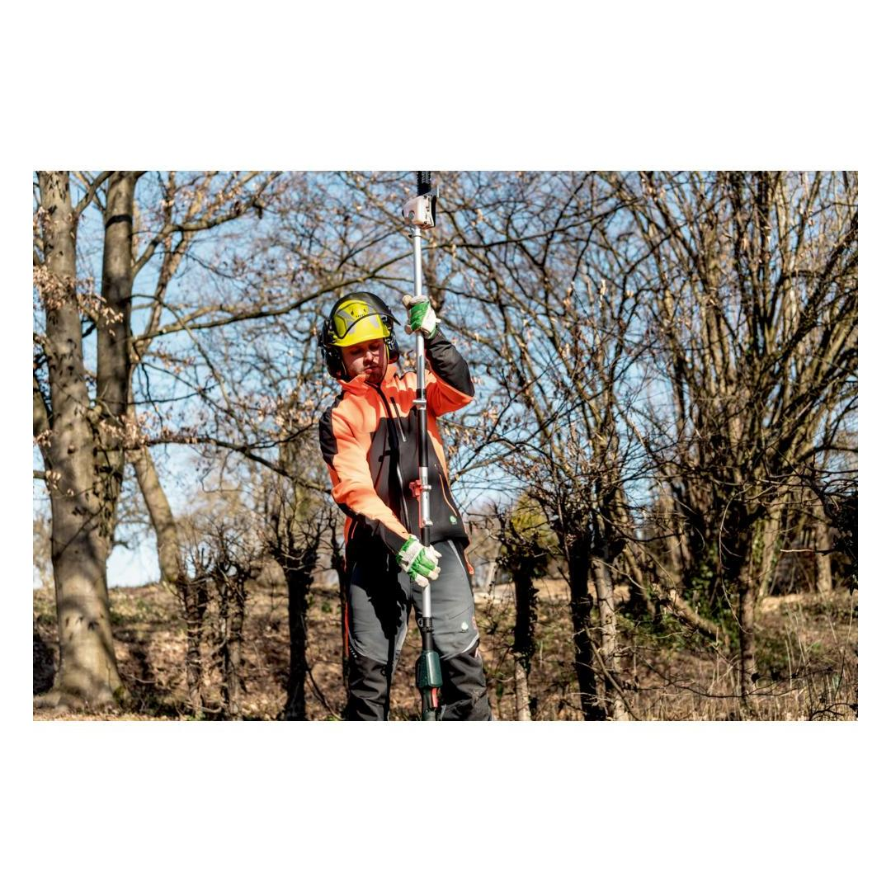
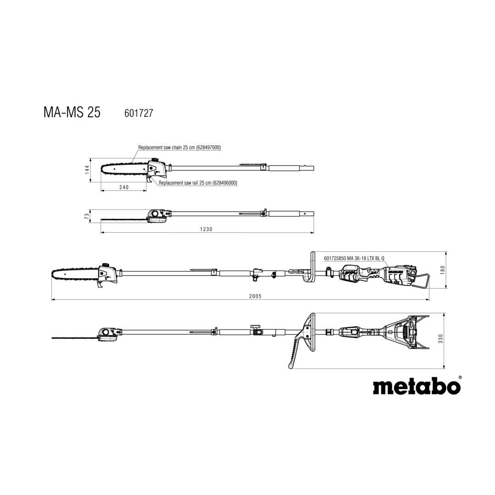
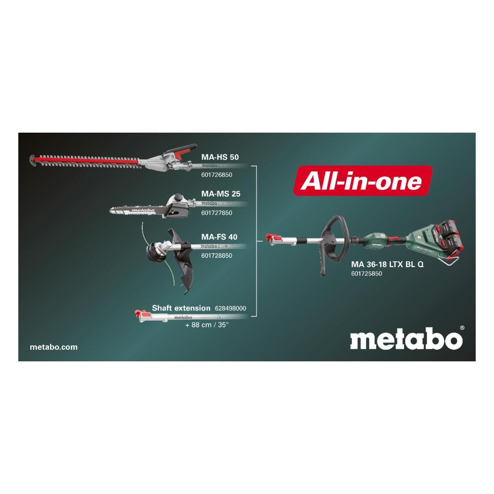

Metabo | Pole pruner attachement
601727850















| Track length | 25 cm / 9 27/32 " |
| Max. chain speed level 2 | 18 m/s / 59 ft/min |
| Weight | 1.7 kg / 3.7 lbs |
Product Description
- Safe tree maintenance with the pole pruner attachment of the Metabo multifunction system, the all-in-one solution for many garden applications
- Together with the cordless multifunction drive MA 36-18 LTX BL Q an environmentally-friendly, quiet system, ideal for areas sensitive to noise
- Metabo "Quick" quick coupling system for tool-free attachment replacement
- Precise and powerful cuts with a chain speed of up to 18 m/s
- Shaft extension to increase the range by 88 cm available as accessory
- Low kickback chain for easy, safe cuts and low vibrations
- Automatic chain lubrication for highest cutting output with minimum service requirements
- Easy re-tensioning and replacement of the saw chain
- Stable stop made from metal for optimal guidance and low-fatigue sawing
- Integrated hook for the removal of cut branches from the treetop
- Semi-transparent oil tank for comfortable controlling and refilling of the chain oil
- Robust use thanks to durable metal gear unit
Product Highlights
Metabo "Quick" quick tool change
without key - quick, comfortable and safe
Technical Details
KEY FIGURES| Track length | 25 cm / 9 27/32 " |
| Cutting length | 24 cm / 9 7/16 " |
| Max. chain speed level 1 | 16 m/s / 53 ft/s |
| Max. chain speed level 2 | 18 m/s / 59 ft/min |
| Saw chain tooth shape | semi-chisel / low profile |
| Saw chain tooth division | 3/8" LP |
| Drive link thickness | 1.3 mm / 0.05 " |
| Number of drive links | 39 |
| Oil container volume | 120 ml |
| Length | 1230 mm / 48 7/16 " |
| Length with drive | 2005 mm / 78 15/16 " |
| Weight | 1.7 kg / 3.7 lbs |
VIBRATION| Vibration | 3.22 m/s² |
| Uncertainty of measurement K | 1.5 m/s² |
NOISE EMISSION| Sound pressure level | 93 dB(A) |
| Sound power level (LwA) | 108 dB(A) |
| Uncertainty of measurement K | 1.29 dB(A) |
Scope of delivery
| Saw chain 25 cm (3/8" LP / 1.3 mm) |
| Saw rail 25 cm |
| Sawing chain protection |
| Combo-spanner |